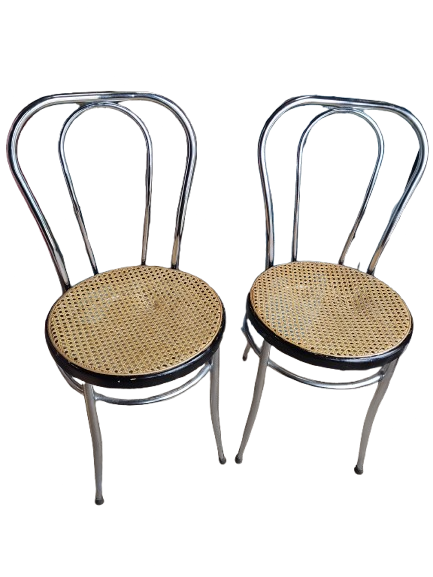

Redonnez vie à vos meubles
Vous souhaitez donner un coup de jeune à vos fauteuils démodés ? Vous cherchez un tapissier professionnel pour la restauration de vos canapés ou de votre mobilier ancien ? L'Atelier d'Annie met tout son savoir-faire artisanal à votre service pour redonner beauté et confort à vos meubles.

Tapissier d'ameublement
Modernisation et rénovation de vos sièges selon vos envies et vos tissus.

Rénovation & restauration
Restauration de meubles anciens pour leur offrir une seconde vie.

Nos réalisations
Découvrez nos avant/après en galerie photo.